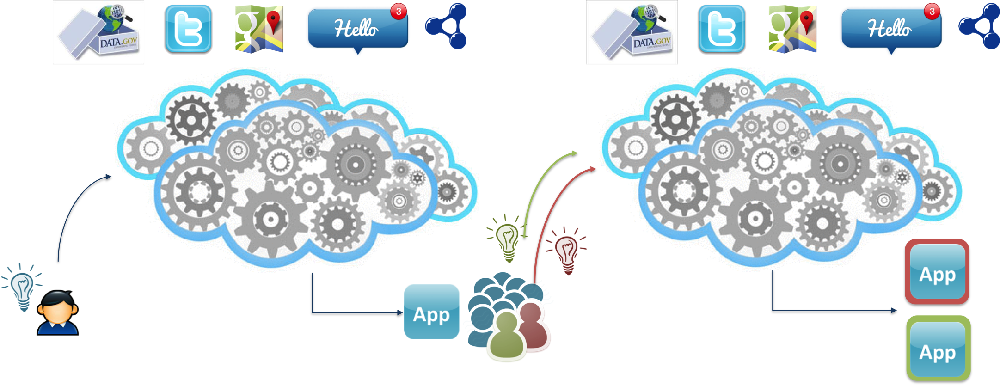
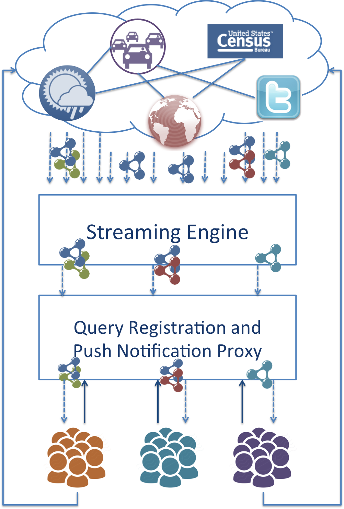
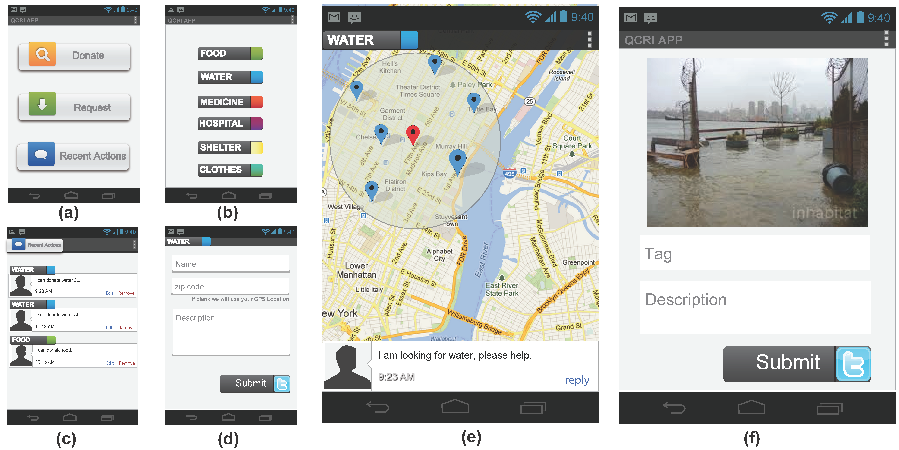
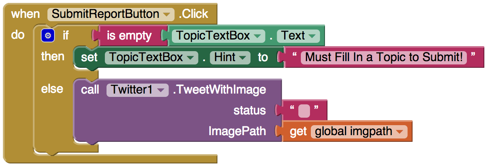
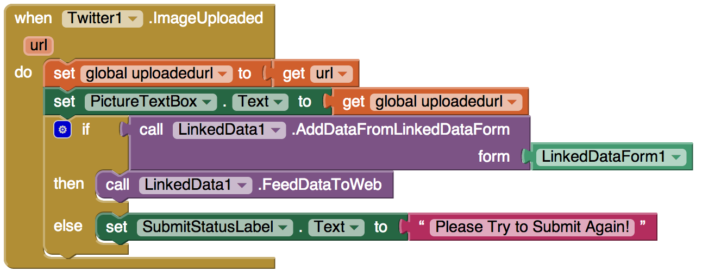

Punya is not your average app
Transform a sea of goodwills into actions by linking knowledge, data and mobility

Smartphones are quickly becoming the primary computing and communication platform for people’s daily tasks. With the rise of social networks, “netizens” are now comfortable with frequently updating their social profiles with their current activities and/or locations. This new source of information, social signals from microblog platforms, has been found to be especially useful in disaster management and relief operations. For example, during the recent Beijing flash floods, people took to Twitter to provide info rmation about the flooded areas and collaboratively developed a live crisis map of the floods impact using Google Maps. By integrating crowdsourced information with Geographic Information Systems (GIS) data or other open datasets released by the local government, some technical volunteers have developed useful mobile applications for disaster reliefs. However, each organization usually has its own application that creates or consumes data stored in standalone databases, or even worse, in spreadsheets. This means most of these applications are built in silos without exploiting the potential of being “interlinked” with other data collected from other organizations, or even the government. The lack of expertise and the cost for building mobile applications cause relief workers to turn to more manual steps for merging various reports from volunteers. Consequently, the increasingly unorganized and scattered information become noise in the system and can sometimes slowdown the decision making process.
One major challenge is how to effectively integrate data generated by multiple parties, including the “crowd”, relief organizations, and governement agencies. We address this challenge by using Linked Data principles to enable the reuse, extension and integration of heterogeneous structured data from distributed sources. However, consuming and generating Linked Data is difficult especially on mobile devices. In this project, we are also focussing on reducing the barrier to the adoption of Linked Data technologies on smartphones.

Punya cloud architecture
Our goal is to enable developers to quickly deploy applications that take advantage of key sources that are fundamental for today’s networked citizens, including Twitter feeds, Facebook posts, current news releases, and government data. These applications will also have the capability of empowering citizens involved in crisis situations to contribute via crowdsourcing, and to communicate up-to-date information to others. To do so, we will extend the App Inventor platform with Linked Data technologies and cloud services. App Inventor X provides features that (i) embeds semantic concepts directly into the process of mobile app-building while hiding most of the operational details from novice developers, (ii) consumes streams of structured information from microblog platforms, crowdsourced and existing open data, and (iii) send real-time push notification to alert targeted audience.
This app is inspired by MatchApp, where requests for resources are met with the availability of those resources. Consider this resource match-making scenario: Alice lives in New York City. After Hurricane Sandy hits, Alice wants to help people in need. Bob has been affected by the crisis. Both Bob, the requestor, and Alice, the donator, can place the donation and request for items within our app as shown in the figure below. They can also view/edit/remove recent list of their activities as shown in (c). Alice chooses to donate water, so she checks up all the people within a 3 miles radius of her location who are in need of water on a map as shown in (e). Bob had previously requested water by using our app (d). Alice selects Bob from the list of people in need. Alice and Bob can message directly with each other to arrange the exchange.
On his way to the grocery store, after a severe hurricane, Joe noticed many parts around his community are in bad conditions. For example, fallen trees are blocking the road and some can be dangerous for the pedestrians. With our WeReport app, he could take either a picture or a video of the scene. He decides to take a picture of the road, by adding a ``tag'' and a ``description'' to the image as shown in (f) in the figure above.
WeReport User Interface
Now imagine a different world, where creating apps doesn’t require years of programming experience, where artists, scientists, humanitarians, health-care workers, attorneys, firefighters, marathon runners, football coaches, and people from all walks of life can create apps. ...transform ideas into prototypes without hiring programmers- David Wolber, "App Inventor: Create your own Android Apps"

Sumits photos from your smartphone to TwitPic
App Inventor allows newcomers to computer programming to create software applications for the Android operating system (OS). It uses a graphical interface that allows users to drag-and-drop visual objects to create an application that can run on Android devices. Punya adds Semantic Web features to mobile apps so that developers can easily integrate their apps with thousands of useful datasets out there in the Linked Open Data cloud. Futhermore, Punya also provides easy access to sensors and other personal information on the smartphone. By moving a few blocks and putting them together, you can build a crowdsource app that reports live events happening in your community. How about also make your app to alert its users when more than thousands of people are tweeting an nearby and upcoming snowstorm? Want an app for local government officer to check school districk data and show information on the map?

In this tutorial, we will show you how to use our featured app, WeReport. WeRerepot is an crowdsource app that allows its users to voluntarily generate short reports about what's happening nearby. The report can contain a photo taken by the user and a short description describing what is going on. On the other hand, a user can also subscribe to the topics of events that they are interested. Whenever an event was reported by the crowd, those who subscribe to a specific topic that matched the event will receive an alert through push notificaitons according to their current location. For example, if a voluntary relief worker wants to know when there are power outage reported in the community and offer helps just in time.
Furthermore, you will also learn how to modify WeReport app to meet your needs. Maybe you want to build a traffic accident report app, or maybe you want to build an app that reports live events happening in a country fair! With a few changes in the blocks, you can have your own app!
The linked data streaming alows ellentesque habitant morbi tristique senectus et netus et malesuada fames ac turpis egestas. Vestibulum tortor quam, feugiat vitae, ultricies eget, tempor sit amet, ante. Donec eu libero sit amet quam egestas semper. Aenean ultricies mi vitae est. Mauris placerat eleifend leo. Quisque sit amet est et sapien ullamcorper pharetra. Vestibulum erat wisi, condimentum sed, commodo vitae, ornare sit amet, wisi. Aenean fermentum, elit eget tincidunt condimentum, eros ipsum rutrum orci, sagittis tempus lacus enim ac dui. Donec non enim in turpis pulvinar facilisis. Ut felis. Praesent dapibus, neque id cursus faucibus, tortor neque egestas augue, eu vulputate magna eros eu erat. Aliquam erat volutpat. Nam dui mi, tincidunt quis, accumsan porttitor, facilisis luctus, metus
The push notification Push Notification is good at cutting through the noise and delivering the useful information to the hands of the people that want it. For example, field workers who use a disaster relief app might want to be notifid when the specific kinds of resources has arrived. Local volunteers who use MatchApp want to know when some people are in need that they can offer help. With push notification, an app can always delievers messages to people directly to update the most recent situation.
The sensor components provides many high-level components for access to smartphone sensors and personal information. For example, it has components for reading the GPS location, taking photos with the camera, receiving SMS texts, and sending Twitter messages. All the built-in functions are just a "block" away.